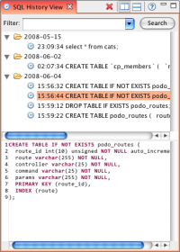

This page gives an overview of how to view your SQL query history using the Database Explorer plug-in.
Contents |
What
Use the SQL History View in the Database Explorer plug-in to view the SQL queries that you have already executed. Use the filter feature of this view to narrow your searches of previous queries.
How
Displaying your query history
To search your query history, type a search term into the Filter text box in the SQL History View, and click the Search button.
The view will display all matching queries.
To display an individual query, select the query from the list. The view will display the query text in the box below the list.
Displaying the SQL History View
  SQL History View
SQL History View
{kind=link}
The SQL History View should be displayed by default as part of the Database perspective. (If you have not already switched to the Database perspective, click the Database perspective button  in the upper right corner of your workbench.)
If you do not see the SQL History View (shown below), you can display it by going to Window > Show View > SQL History View.
in the upper right corner of your workbench.)
If you do not see the SQL History View (shown below), you can display it by going to Window > Show View > SQL History View.